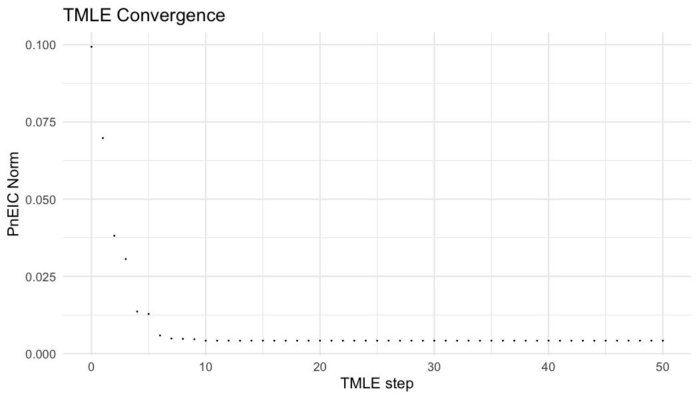
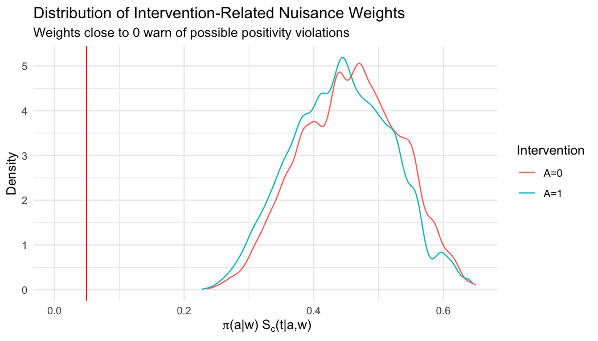

This article explains how to evaluate the TMLE update when
concrete reports slow convergence or non-convergence. The
goal is to distinguish a meaningful targeting problem from a numerically
tiny empirical efficient influence curve (EIC) component in a rare-event
setting.
The illustrative code snippets assume a trial
data.table and a fitted ConcreteEst object as
built in the Trialist
quickstart.
What convergence means here
The TMLE update tries to make the empirical mean of each requested target EIC component small. Stopping is evaluated for the requested intervention, target event, and target time components; internal complement rows used to form survival contrasts are not used as additional stopping equations. The original stopping rule checks:
abs(PnEIC) <= seEIC / (sqrt(n) * log(n))This is a relative, component-specific threshold. It can become extremely strict when an event is rare or a component has near-zero variability.
concrete now exposes three stopping rules:
| Rule | Meaning | Typical use |
|---|---|---|
relative |
Original component-specific rule | Default, best first check |
absolute |
abs(PnEIC) <= EICStopAbsTol |
Rare events or near-zero EIC variance |
hybrid |
abs(PnEIC) <= max(relative threshold, EICStopAbsTol) |
Sensitivity analysis combining relative and absolute checks |
A setting such as EICStopRule = "absolute" and
EICStopAbsTol = 0.02 / sqrt(n) means: stop when every
requested target EIC has empirical mean no larger than this risk-scale
tolerance. This is often more interpretable for sparse early event
targets than forcing a relative threshold whose denominator is nearly
zero. (If you choose "absolute" or "hybrid"
and leave EICStopAbsTol at its default of 0,
concrete substitutes 0.02 / sqrt(n) for you,
since a tolerance of 0 can never be met.)

Inspect the diagnostics
components <- getTmleDiagnostics(ConcreteEst, type = "components")
components[order(ratio, decreasing = TRUE)]
trace <- getTmleDiagnostics(ConcreteEst, type = "trace")
trace
norm <- getTmleDiagnostics(ConcreteEst, type = "norm")
normExample component output for a converged fit:
| Intervention | Time | Event | PnEIC | RelativeCriteria | AbsoluteCriteria | StopCriteria | ratio | check |
|---|---|---|---|---|---|---|---|---|
| A=1 | 1000 | 1 | 0.00057 | 0.00077 | 0.001 | 0.001 | 0.57 | TRUE |
| A=0 | 1000 | 1 | -0.00074 | 0.00089 | 0.001 | 0.001 | 0.74 | TRUE |
| A=1 | 2000 | 1 | 0.00022 | 0.00110 | 0.001 | 0.00110 | 0.20 | TRUE |
| A=0 | 2000 | 1 | -0.00031 | 0.00104 | 0.001 | 0.00104 | 0.30 | TRUE |
Example trace output:
| Step | NormPnEIC | MaxRatio | FailingComponents | MaxAbsPnEIC |
|---|---|---|---|---|
| 0 | 0.0204 | 8.12 | 4 | 0.0073 |
| 1 | 0.0068 | 2.45 | 2 | 0.0022 |
| 2 | 0.0021 | 1.08 | 1 | 0.0011 |
| 3 | 0.0013 | 0.74 | 0 | 0.0007 |
The component table is usually the most useful first view.
plot(ConcreteEst, convergence = TRUE) shows the norm of the
empirical EIC falling across update steps, and
plot(ConcreteEst, gweights = TRUE) shows the distribution
of the treatment/censoring nuisance weights with the positivity-risk
threshold marked:


Key columns:
-
PnEIC: empirical mean EIC for the component -
RelativeCriteria: original relative stopping threshold -
AbsoluteCriteria: absolute threshold supplied byEICStopAbsTol -
StopCriteria: threshold used by the selected rule -
ratio:abs(PnEIC) / StopCriteria -
check: whether that component passed the selected rule -
Converged: whether the overall update converged -
ConvergenceStep: update step where convergence was reached
Focus first on rows with check == FALSE, sorted by
ratio.
components[check == FALSE][order(ratio, decreasing = TRUE)]If there are failures, the output will identify which event/time/intervention combination is driving the problem:
| Intervention | Time | Event | AbsPnEIC | StopCriteria | ratio | check |
|---|---|---|---|---|---|---|
| A=1 | 730 | 1 | 0.0048 | 0.0010 | 4.8 | FALSE |
| A=0 | 730 | 1 | 0.0017 | 0.0010 | 1.7 | FALSE |
This pattern says the empirical EIC is still materially larger than the chosen threshold. Start with adaptive updating and a simpler learner library before loosening the stopping rule.
A worked rare-event example
The tables below are real getTmleDiagnostics() output
from the PBC competing- risks example, targeting both death (event 1)
and the rarer transplant (event 2) at four times. Under the
relative rule, the rare event-2 components have a tiny
standard-error scale, so their stopping threshold is minuscule and the
ratio blows up even though the absolute PnEIC
is small — the fit is flagged as not converged:
| Intervention | Time | Event | PnEIC | StopCriteria | ratio | check | |
|---|---|---|---|---|---|---|---|
| 6 | A=1 | 730 | 2 | -0.00145 | 0.00003 | 53.31646 | FALSE |
| 14 | A=0 | 730 | 2 | 0.00057 | 0.00092 | 0.61972 | TRUE |
| 7 | A=1 | 1460 | 2 | -0.00083 | 0.00196 | 0.42503 | TRUE |
| 8 | A=1 | 2190 | 2 | 0.00070 | 0.00248 | 0.28114 | TRUE |
Switching to the absolute rule
(0.02 / sqrt(n)) judges those same small PnEIC
values against a risk-scale tolerance. The spurious blow-up disappears —
the worst ratio drops from roughly 50 to about 2 — leaving only a
genuinely harder component that the escalation ladder addresses:
| Intervention | Time | Event | PnEIC | StopCriteria | ratio | check | |
|---|---|---|---|---|---|---|---|
| 7 | A=1 | 1460 | 2 | -0.00226 | 0.00113 | 1.99585 | FALSE |
| 8 | A=1 | 2190 | 2 | 0.00220 | 0.00113 | 1.94196 | FALSE |
| 6 | A=1 | 730 | 2 | -0.00210 | 0.00113 | 1.85473 | FALSE |
| 14 | A=0 | 730 | 2 | 0.00094 | 0.00113 | 0.83213 | TRUE |
This is the canonical rare-event pattern: under the relative rule a
large ratio is driven by a near-zero threshold rather than
by a meaningful targeting failure. The absolute rule removes that
artifact; any remaining failures (here, the sparse transplant event) are
real sparsity to work through with the escalation ladder below.
Recommended escalation ladder
Start simple and add flexibility only after the conservative analysis behaves as expected.
1. Run a conservative baseline
Use default Cox hazards and a small treatment Super Learner library.
Model <- list(
arm = c("SL.mean", "SL.glm"),
"0" = list(Censor = survival::Surv(time, event == 0) ~ arm + age + sex),
"1" = list(Event = survival::Surv(time, event == 1) ~ arm + age + sex)
)
ConcreteArgs <- formatArguments(
DataTable = trial,
EventTime = "time",
EventType = "event",
Treatment = "arm",
ID = "id",
Intervention = makeITT(),
TargetTime = c(365, 730),
TargetEvent = 1,
CVArg = list(V = 5),
Model = Model,
Verbose = FALSE
)
ConcreteEst <- doConcrete(ConcreteArgs)2. Use adaptive updating
The adaptive method uses a line search with rollback and is the
recommended first convergence fix. With
EICStopRule = "relative" it accepts updates that reduce the
target empirical EIC norm. With EICStopRule = "absolute" or
"hybrid" it accepts updates that reduce the active
component-wise stopping ratio.
ConcreteArgs$UpdateMethod <- "adaptive"
ConcreteArgs <- formatArguments(ConcreteArgs)
ConcreteEst <- doConcrete(ConcreteArgs)3. Use an absolute risk-scale stopping rule for rare events
ConcreteArgs$UpdateMethod <- "adaptive"
ConcreteArgs$EICStopRule <- "absolute"
ConcreteArgs$EICStopAbsTol <- 0.02 / sqrt(nrow(ConcreteArgs$Data))
ConcreteArgs <- formatArguments(ConcreteArgs)
ConcreteEst <- doConcrete(ConcreteArgs)Use this when the largest failing components have very small absolute
PnEIC values but large ratios because the relative
threshold is tiny. Treat it as a convergence sensitivity: report the
stopping rule, compare estimates with the relative fit when available,
and focus first on absolute risks and risk differences when event risks
are very small.
A hybrid rule remains useful as a secondary sensitivity:
ConcreteArgs$UpdateMethod <- "adaptive"
ConcreteArgs$EICStopRule <- "hybrid"
ConcreteArgs$EICStopAbsTol <- 0.02 / sqrt(nrow(ConcreteArgs$Data))
ConcreteArgs <- formatArguments(ConcreteArgs)
ConcreteEst <- doConcrete(ConcreteArgs)4. Increase iterations only if progress is continuing
ConcreteArgs$MaxUpdateIter <- 1000
ConcreteArgs <- formatArguments(ConcreteArgs)
ConcreteEst <- doConcrete(ConcreteArgs)If the trace has flattened and the same tiny components remain, increasing iterations may not change the practical estimate.
5. Simplify or stabilize nuisance estimation
If abs(PnEIC) remains large, the issue may be nuisance
instability rather than only the stopping threshold.
Try:
- simpler hazard learner libraries
- fewer high-variance learners for small trials
- stronger propensity-score truncation through
MinNuisance - fewer target times for initial debugging
- checking for arms with no events near the target time
Interpreting common patterns
| Pattern | Likely meaning | Next step |
|---|---|---|
Large ratio, tiny AbsPnEIC
|
Relative rule is too strict on a near-zero component | Try absolute with 0.02 / sqrt(n)
|
Large ratio, large AbsPnEIC
|
Targeting problem remains meaningful | Use adaptive update and inspect learners |
| Many failing components for censoring | Censoring or positivity instability | Check censoring by arm and covariates |
| Failure only for one rare event/time | Sparse target component | Report event counts and try absolute stopping |
| Norm decreases then rebounds | Update overshooting | Use UpdateMethod = "adaptive"
|
A reporting template
For trial reports or issue reports, record:
list(
package_version = as.character(packageVersion("concrete")),
update_method = ConcreteArgs$UpdateMethod,
eic_stop_rule = ConcreteArgs$EICStopRule,
eic_stop_abs_tol = ConcreteArgs$EICStopAbsTol,
max_update_iter = ConcreteArgs$MaxUpdateIter,
target_time = ConcreteArgs$TargetTime,
target_event = ConcreteArgs$TargetEvent,
event_counts = trial[, .N, by = .(arm, event)],
components = getTmleDiagnostics(ConcreteEst, type = "components")
)This is usually enough to understand whether a convergence issue is numerical, data-sparsity related, or learner related.